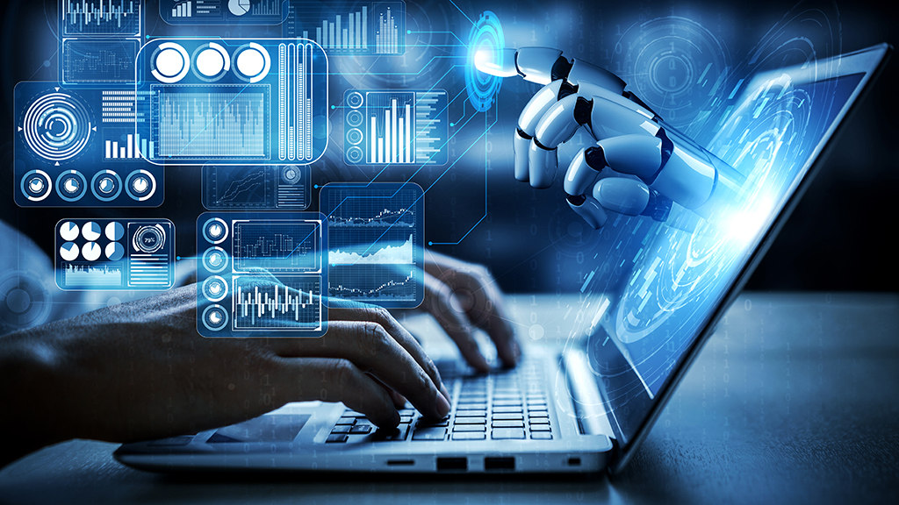
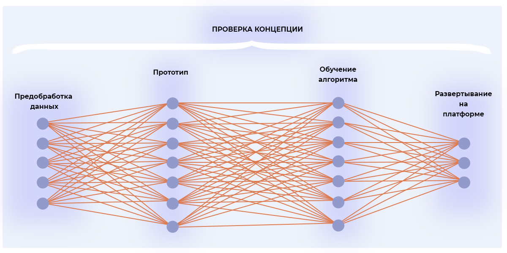

История и создание
ЭВМ пятого поколения — это машины, которые активно разрабатывались в 1980-х годах и до сих пор являются объектом исследований. Главной целью создания ЭВМ пятого поколения было создание машин, которые могут понимать и обрабатывать человеческий язык, работать с искусственным интеллектом, решать сложные задачи, которые невозможно решить с помощью традиционных вычислений.
В отличие от предыдущих поколений, где основной акцент делался на повышение мощности процессоров и улучшение скорости вычислений, в ЭВМ пятого поколения акцент был сделан на развитие искусственного интеллекта и обработки естественного языка.
Одним из самых известных проектов в рамках создания ЭВМ пятого поколения стал японский проект "Fifth Generation Computer Systems" (FGCS), который начался в 1982 году. Этот проект был нацелен на разработку вычислительных систем с использованием параллельной обработки и искусственного интеллекта, что стало основой для будущих технологий в области AI и машинного обучения.
Как это работает: Искусственный интеллект и параллельные вычисления
Одной из ключевых особенностей ЭВМ пятого поколения является использование технологий искусственного интеллекта (AI). Это означает, что компьютеры могут "учиться" на основе данных, анализировать их и принимать решения. Для этого применяются различные алгоритмы, такие как нейронные сети и системы машинного обучения.
Важной частью таких ЭВМ является также параллельная обработка данных. Это позволяет значительно повысить производительность за счет одновременного выполнения множества вычислительных задач, что крайне важно для работы с большими объемами данных и сложными алгоритмами.
В отличие от классических ЭВМ, где задачи решаются последовательно, параллельные вычисления позволяют выполнять несколько операций одновременно, что значительно сокращает время на обработку информации.
Основные принципы работы
ЭВМ пятого поколения используют новые принципы обработки информации, включая когнитивные вычисления и интеллектуальные интерфейсы. Для их работы необходимы огромные объемы данных, которые анализируются и обрабатываются с использованием машинного обучения. Это позволяет создавать системы, которые могут "понимать" контекст, предсказывать результаты и адаптироваться к изменяющимся условиям.
Важными компонентами таких систем являются нейронные сети, которые имитируют работу человеческого мозга, и алгоритмы машинного обучения, которые обучаются на примерах, постепенно улучшая свои результаты.
Применение и будущее
Хотя ЭВМ пятого поколения все еще продолжают развиваться, они уже активно используются в таких областях, как медицинские диагностики, автоматизация бизнес-процессов, робототехника и многое другое. Применение искусственного интеллекта позволяет значительно повысить эффективность работы в различных сферах.
В будущем ЭВМ пятого поколения смогут решать все более сложные задачи, в том числе создание полностью автономных систем, которые могут принимать решения без вмешательства человека.
Продолжение развития таких систем откроет новые горизонты для вычислительных технологий и сделает искусственный интеллект доступным для широкого применения в самых разных областях.